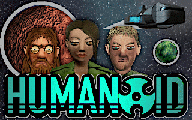

█ █
██
The background image of starry sky is 20 years old, back from 2001.
When I was 17, I had a plan to create a space travelling adventure game. I got it to a point of a working prototype of the game interface. Then I lost interest but I still keep a copy of my data from the old days.
Recently, as a fun activity in lockdown, I had an idea to take the image data from that old project and put them together once again. To demonstrate how it may have looked like if I finished it.
Here's what I get:
[click image to see more]